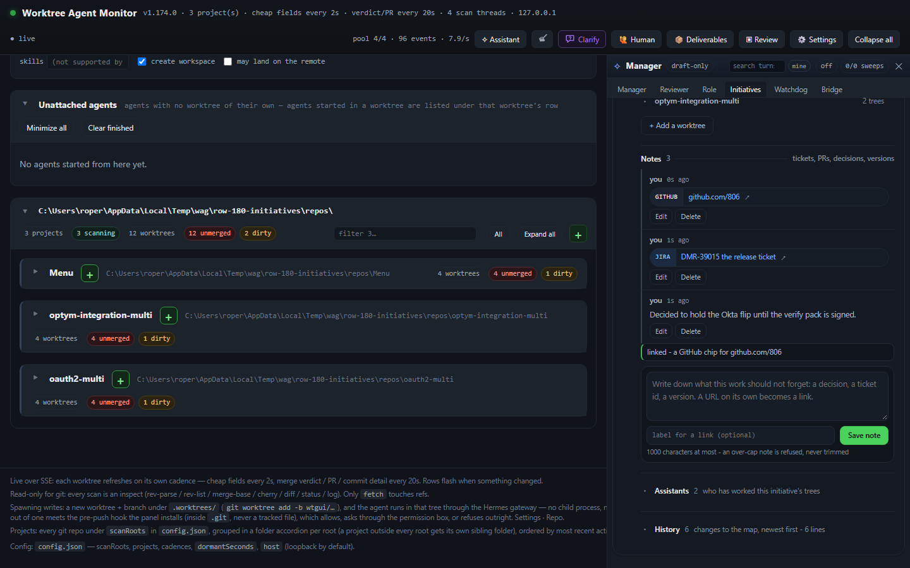
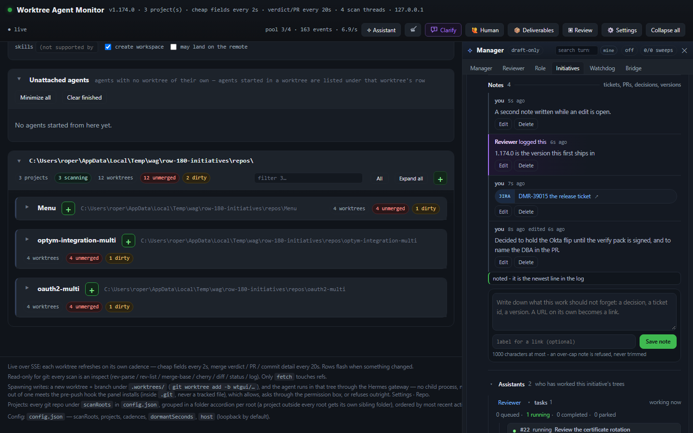
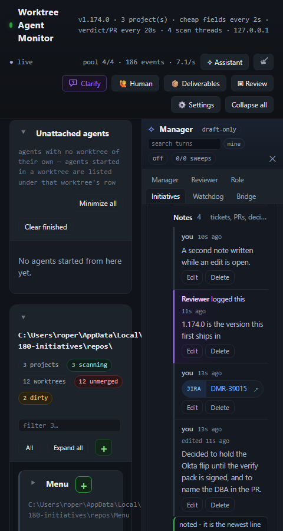

The note log on the initiative card, and the two boxes that were the wrong way round
agent-worktree-gui 1.174.0, branch wtgui/read-queue-row-320-first-fd654b, rebased onto main at 7a8227c5 (1.173.2). Queue row 320, the UI half: the notes model was already on main in 1.170.0, and this row draws it, fixes the inverted edit form at its cause, and brings the Assistants and History folds up to the waves lane. Every line number is on this branch; every measurement comes from tools/verify-initiative-notes.mjs driving real Chromium against a sandbox panel.
- Files in the UI change
- public/assistant.js, public/style.css
- Model, routes, lib/
- untouched - the row that owns them landed first
- New gate
- tools/verify-initiative-notes.mjs (74 checks, 0 failed)
- Version
- 1.174.0, above main's 1.173.2
- Landing
- push and PR only; this branch is not merged into
1. The inversion, and the rule that did it
The reader's screenshot showed a tall empty title box over a short description with a scrollbar. It was not a styling preference: one inherited flex-basis was being measured on the wrong axis.
| What | Where | What it does here |
|---|---|---|
| .as-group input[type="text"] | public/style.css:4961 | flex: 1 1 250px - the 250px is a flex-BASIS, and a basis is a size on the MAIN axis |
| #as-initiatives .init-form | public/style.css:5620 | display:flex; flex-direction: column - so the main axis is VERTICAL, and that 250px became the title input's height |
| .as-note-box (the textarea) | public/style.css:4829, 5654 | no flex rule of its own, rows=3 at 20px line boxes - so it drew exactly three rows and scrolled through the rest |
Measured on the sandbox before any change, at a 479px and a 449px pane:
title input height 250.0px flex "1 1 250px" flex-basis 250px scrollHeight 248 / clientHeight 248 description height 78.0px flex "0 1 auto" flex-basis auto scrollHeight 356 / clientHeight 76 (a scrollbar through 356px of words)
The fix is at that cause, not at the symptom: the column's own field rule takes the basis off
(flex: 0 0 auto) and states the height it means - one control row - while the textarea is given a floor of
96px and keeps resize: vertical. The same correction the waves lane's field already carries for the same
reason (public/style.css:5871). After the change, at three widths:
| Viewport | Pane | Title | Description | Title flex-basis |
|---|---|---|---|---|
| 1440x900 | 479px | 32px (one 32px row) | 96px | auto |
| 900x900 | 449px | 32px | 96px | auto |
| 480x900 | 239px | 32px | 96px | auto |
Gate claims: "the form is a COLUMN" (so the basis WAS a height), "the title is ONE control row", "the description has the room", "the title's flex-basis is no longer the 250px that became its height", and "the inversion is gone" - one check per width, three widths. The late New-initiative form shares the same rule and gets the same fix.
2. The note log, drawn from the model that was already there
The store's own fields are the whole vocabulary of this half. Nothing was added to the model, and nothing is guessed:
| Field on the read | What the card does with it |
|---|---|
| notes (newest first), noteCount | the list and the count on the section head |
| by | reader draws "you"; an assistant draws its NAME from the card's own assistant rows, else its id |
| kind "link", host, label, url | a chip: the host word in the store's own four values (Jira / Bitbucket / GitHub / link), the label, an anchor with target="_blank" rel="noopener noreferrer" |
| at, editedAt, editedBy | "3m ago", and "edited 2m ago by ..." beside it - the author stamp is never replaced |
| caps.noteText / noteLabel / notes | the form's maxlength and the sentence under it; an over-cap write is REFUSED by the store and its sentence is drawn, never clipped |
Three writes, the three routes: POST /api/initiatives/notes/add | notes/edit | notes/delete. Each answer
carries the whole document the next GET would answer, so the tab adopts it instead of re-reading. A delete asks once
("Delete for good?") because a note is memory with no undo in this tab.

What the gate proves, end to end, in the browser
- the empty state is drawn and says what belongs there: ticket, pull request, decision, version (four separate checks);
- a note typed in the tab is drawn AND is in
initiatives.json- the gate reads the file, so a painter cannot pass on a write the route refused; - a Jira URL with a label draws host
Jiraand the label; a GitHub URL draws hostGitHub; both are real anchors opening in a new tab; the store recordedhost: "jira"at write time; - an edit changes the words, keeps
by: "reader", and stampseditedAt/editedBy; - the same URL pasted twice is still one row, and the tab says so;
- a delete asks once, removes on the second press, and the store loses the row;
- a note logged with
by: "assistant-2"- the writer an assistant's turn uses - draws.init-note.is-assistant, names that assistant, and differs from the reader's row in class and in its left-rule colour (rgb(163, 113, 247)againstrgb(53, 64, 79)).

3. The two folds, in the waves lane's grammar
Assistants and History read as body text beside the waves lane: a 12px transparent row with a caret. They are now
sections - the name at one weight, the count in tabular figures, one sentence saying what the fold holds, a hairline
over the block, and their rows as cards on a rail
(public/style.css:6055, public/assistant.js:4491).
No behaviour moved. The markup keeps data-init-assist-fold,
data-init-history-fold, data-init-hist-row, data-init-hist-actor,
data-init-assistant-row and the init-proj/init-proj-name classes the older
gates and the measurement tools select on. The gate drives the behaviour rather than the look:
| Behaviour | Gate result |
|---|---|
| Assistants fold opens and closes | aria-expanded false -> true -> false |
| History fold opens and closes | aria-expanded false -> true -> false |
| The counts on both heads | 2 assistants, 6 changes - the read's own numbers |
| The assistant rows and their ask-prefill | 2 rows, each with its thread and the card's title in data-init-title |
| The four count chips per assistant | queued / running / completed / parked, always four |
| An assistant's task fold | opens, and its task cards are drawn inside it |
| The history entries | 6 rows, each with actor, time and the module's sentence |
The existing unit contract still passes untouched: node --test test/initiative-fold.test.js test/initiative-tasks.test.js test/initiative-history.test.js test/initiatives-*.test.js - 113 tests, 0 failed.
4. One overflow that was not this row's, fixed in passing
At the 239px pane the waves lane's own hint (flex: 0 0 auto; white-space: nowrap) measured 248px of
section head inside 161px of card and pushed the whole Initiatives pane to 301px. It was already there on main. The
rule now shrinks and ellipses (public/style.css:5698), which is invisible at any width where it fits. The
pane measures 239/239 at 480 now, and 479/479 at 1440.
5. What is deliberately not here
- No note list on an archived card. The read answers
noteCountfor an archived initiative but not its notes, and this row may not add a field or change the route that would have to carry them. The count is on the record; the list waits for the row that changes the read. - No label field toggle. The label field is always drawn and is simply ignored by the store for prose (a label belongs to a link); hiding it would need a re-render under the caret for a rule the store already enforces.
- No model, route or lib/ change. Rows 319 and 320 split that way: the model landed first, this is the half that draws it.
6. Reproducing it
node tools/verify-initiative-notes.mjs # boots its own fixture + panel, 74 checks node tools/verify-initiative-notes.mjs --shots <dir> # screenshots somewhere else
The sandbox writes its own WAG_HOME under the scratch root (tools/initiatives-fixture.mjs), boots server.js on a free port, and never touches the live panel on 7331. Screenshots for this report: docs/reports/assets/initiative-notes-1.174.0/.
